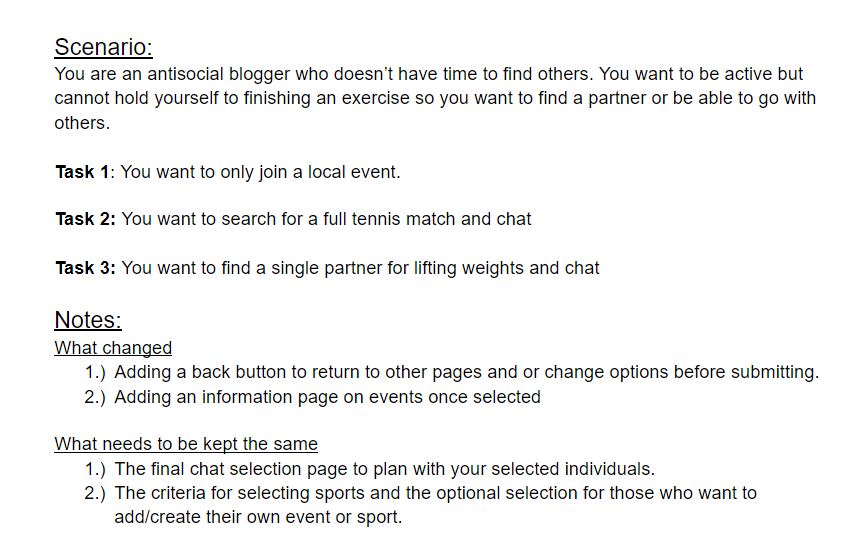

Problem Statement: Lonely Athletes

Many athletes, especially those who are not on teams or in clubs struggle to find and connect with people who are willing to play/train with them.
Affinity Diagram: Lonely Athletes

A list of sports, classifications, and skill groups provided within our app.
Persona: 4 Personas for Athletes
4 Personas of typical Lonely Athletes app user.
Story Board: Examples of 4 different users
Comic strips illustrating 4 different users of our app.
Sketches: Examples of different UI
Sketches of potential app interfaces.
Paper Prototype: Lonely Athletes App

A functional prototype of potential interactions and uses with the app.
Usibility Testing Lonely Athletes App
A scenario and tasks evaluated by a usibility test to determine needed changes.
Lo-Fi Prototype: Lonely Athletes App

A scenario and tasks evaluated through a LoFi Prototype.
Hi-Fi Prototype: Lonely Athletes App

A high fidelity prototype.
Hi-Fi Prototype: Lonely Athletes App

A final presentation of Lonely Athletes.